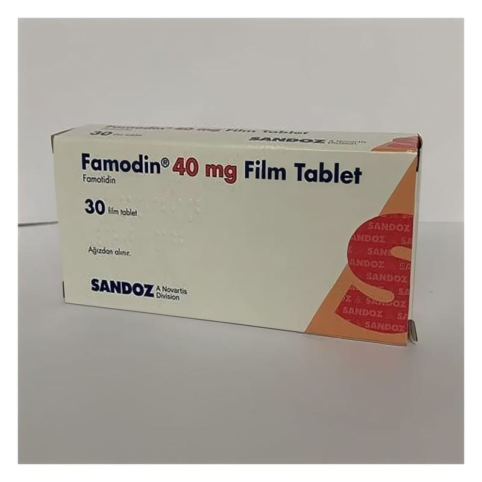

Famodin 40 mg Film Tablet, 30 Adet

Ne için kullanılır
KT · Bölüm 1FAMODİN etkin madde olarak famotidin içerir. Famotidin H
reseptör antagonistleri olarak adlandırılan ilaçlar sınıfına dahildir. Midenin ürettiği asit miktarını azaltarak etki eder.
FAMODİN 30 film tablet içeren blisterlerde ambalajlanmıştır.
FAMODİN, aşağıdaki durumlarda kullanılabilir: • Mide (gastrik) ve ince barsağınızın ilk bölümündeki (duodenal) ülserlerin tedavi edilmesi ve tekrarının önlenmesi için, • Midenin çok fazla asit ürettiği ve asidin yemek borusuna geçerek yanmaya neden olduğu (gastroösofageal reflü gibi) durumları tedavi etmek için ve tekrarlarını önlemek için, • Midenin çok fazla miktarda asit salgılamasından kaynaklanan Zollinger Ellison Sendromu ve multipl endokrin adenoma gibi hastalık durumlarında kullanılır.